실행부터 결과 저장까지
EmailTools 사용 설명서
받은 이메일을 불러와 첨부파일을 보관하거나 필요한 내용을 Excel 표로 만들 수 있습니다. 처음에는 샘플 메일로 연습한 뒤 자신의 메일로 작업해 보세요.
- 1프로그램 실행
- 2할 일 선택
- 3메일 불러오기
- 4항목 확인
- 5결과 저장
설명서의 굵은 글씨는 화면에서 찾을 버튼이나 항목 이름입니다. 예시 그림에는 연습용 메일을 사용했습니다.
처음 시작하기
01시작 전에 준비할 것
이메일 파일을 준비하고, 받은 프로그램의 압축을 모두 풉니다.
- 프로그램 압축 파일을 마우스 오른쪽 버튼으로 누르고 압축을 모두 풉니다.
- 압축을 푼 폴더에서 run.bat을 찾습니다. 프로그램은 이 파일로 시작합니다.
- 작업할 이메일을 .eml 파일로 준비합니다. 파일이 없다면 다음의 샘플 연습부터 해도 됩니다.
더 알아보기
받은 압축 파일의 이름은 EmailTools_v2.0.0_portable.zip입니다. 압축 파일 안에서 바로 실행하지 말고, 먼저 압축을 모두 풀어 주세요.
프로그램을 다른 곳으로 옮길 때는 폴더 전체를 옮깁니다. run.bat만 따로 복사하면 실행에 필요한 다른 파일을 찾지 못합니다.
이메일을 EML로 저장하는 방법은 사용 중인 메일 프로그램마다 다릅니다. 문서 파일만 가지고 있다면, 그 문서가 첨부된 이메일을 EML로 준비해 주세요.
처음 시작하기
02프로그램 실행
run.bat을 더블클릭하면 기본 브라우저에 내 컴퓨터의 작업 화면이 열립니다.
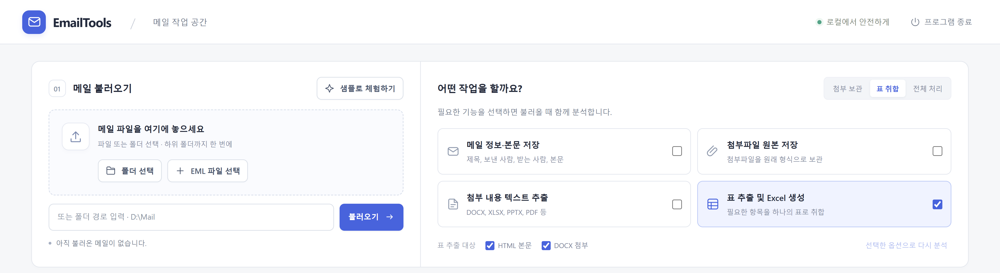
- 압축을 푼 폴더 안의 run.bat을 더블클릭합니다.
- 예시와 같은 화면이 열리면 준비가 끝났습니다. 함께 열린 검은색 창은 그대로 둡니다.
더 알아보기
실행 순서는 run.bat → 내장 Python → 내 컴퓨터의 로컬 서버 → 브라우저입니다. 주소가 127.0.0.1로 시작해도 정상입니다. 이번 화면 디자인 변경 후에도 실행·분석·저장 방식은 같습니다.
화면 위쪽에는 프로그램 이름과 종료 버튼이 있습니다. ‘샘플로 체험하기’는 아래 ‘메일 불러오기’ 제목 옆에 있습니다.
화면이 저절로 열리지 않으면 검은색 창에 표시된 http://로 시작하는 주소 전체를 복사해 주소창에 붙여 넣으세요. 다시 실행했을 때는 새 주소를 사용합니다.
처음 시작하기
03할 일 선택
‘어떤 작업을 할까요?’에서 이번에 실행할 기능을 고릅니다.
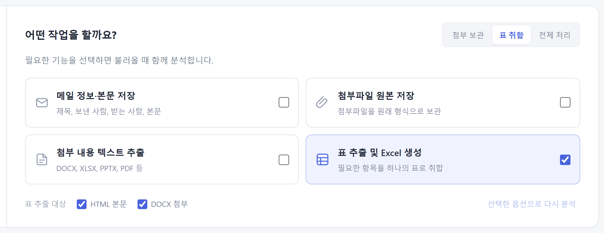
- 표를 모아 Excel로 만들려면 ‘표 취합’을 누릅니다.
- 메일 내용과 첨부파일을 보관하려면 ‘첨부 보관’을 누릅니다.
- 모두 필요하면 ‘전체 처리’를 누릅니다. 세부 항목도 직접 체크할 수 있습니다.
더 알아보기
‘메일 정보·본문 저장’은 메일 제목, 보낸 사람, 본문 등을 글자 파일로 보관합니다. ‘첨부파일 원본 저장’은 받은 문서를 원래 형식으로 보관합니다.
‘첨부 내용 텍스트 추출’은 첨부 문서에서 글자를 읽어 따로 보관하는 기능입니다. ‘표 추출 및 Excel 생성’은 항목을 찾아 하나의 표로 모으는 기능입니다.
표를 가져올 곳은 ‘HTML 본문’과 ‘DOCX 첨부’ 중에서 고릅니다. HTML 메일 본문은 메일 내용 안의 표, DOCX 첨부는 Word 문서 안의 표를 뜻합니다.
샘플로 표 만들기 연습
04연습용 메일 열기
샘플 메일 3개로 먼저 연습합니다. 자신의 메일은 준비하지 않아도 됩니다.
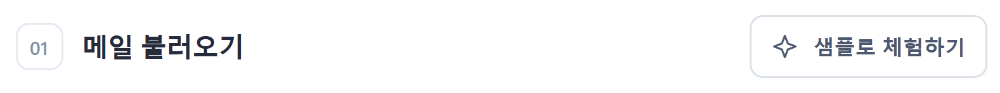
- ‘표 취합’을 눌러 표 만들기를 선택합니다.
- ‘메일 불러오기’ 제목 옆의 ‘샘플로 체험하기’를 누릅니다.
- 연습 목표는 ‘교육일’을 빼고 ‘검토 상태’를 더해 Excel로 저장하는 것입니다.
더 알아보기
샘플을 불러오면 교육명, 강사, 교육일 같은 항목을 모아 보여 줍니다. 다음 페이지부터 차례대로 따라 해 보세요.
샘플로 표 만들기 연습
05불러온 메일 확인
샘플을 읽은 뒤에는 메일 3개와 발견한 항목 7개가 표시됩니다.
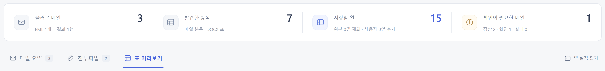
- ‘불러온 메일’에서 메일 수가 3인지 확인합니다.
- ‘표 미리보기’를 눌러 표를 봅니다. 이메일 한 통이 표의 가로 한 줄이 됩니다.
- ‘확인이 필요한 메일’의 1은 샘플에 Word 첨부가 없는 메일이 한 통 있다는 뜻입니다.
더 알아보기
‘발견한 항목’은 메일에서 찾아낸 표 항목의 수입니다. ‘저장할 열’에는 메일 제목 등 기본 정보가 포함될 수 있어 두 숫자가 다를 수 있습니다.
표 아래 화살표로 다음 25개 행을 볼 수 있습니다. 저장할 때는 화면에 보이는 페이지만이 아니라 모든 행을 저장합니다.
샘플로 표 만들기 연습
06필요 없는 항목 빼기
‘열 구성’에서 저장할 항목을 고릅니다. 좁은 창에서는 표 위에 표시됩니다.
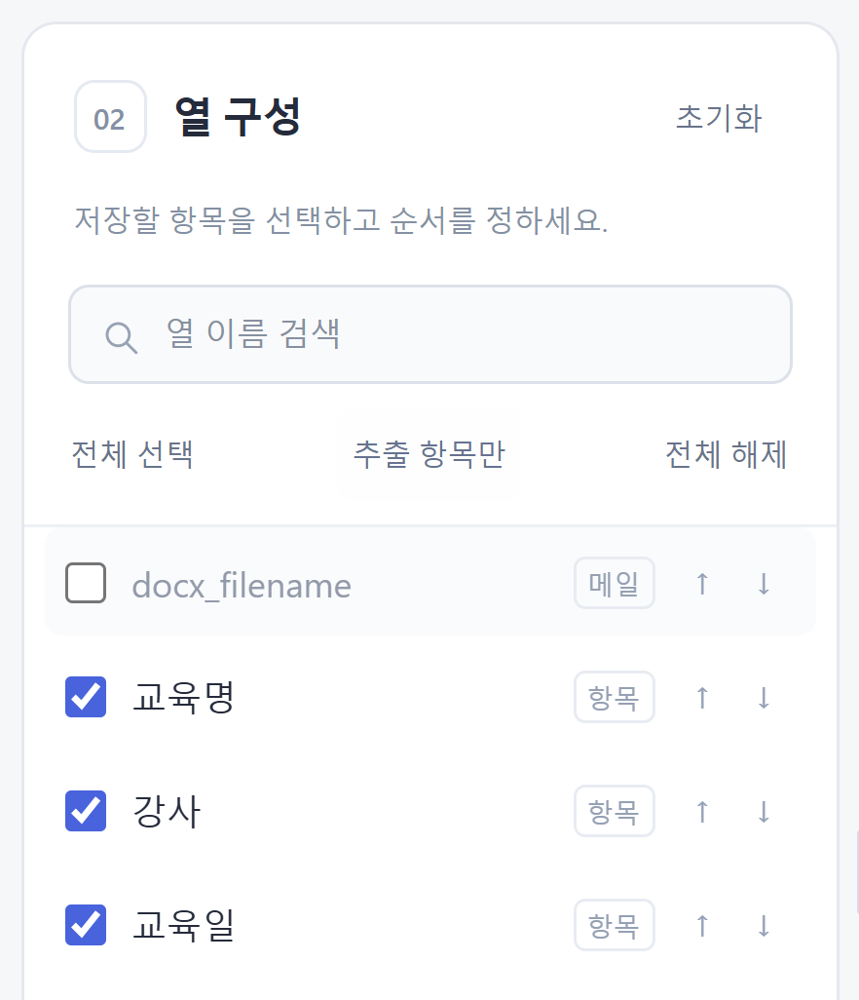
- ‘추출 항목만’을 누르면 메일 제목 같은 기본 정보를 빼고 표에서 찾은 항목만 남깁니다.
- ‘교육일’ 앞의 체크를 해제합니다.
- 결과 미리보기에서 교육일이 빠졌는지 확인합니다. 다시 체크하면 원래 값이 돌아옵니다.
더 알아보기
찾는 항목이 안 보이면 ‘열 이름 검색’에 이름을 입력합니다. 검색은 목록에서 찾기 쉽게 해 주는 기능이며, 검색 결과에 안 보이는 항목을 자동으로 빼지는 않습니다.
‘전체 선택’은 모두 포함하고, ‘전체 해제’는 모두 뺍니다. 저장할 표에는 항목을 하나 이상 남겨야 합니다.
샘플로 표 만들기 연습
07항목을 뺀 표 확인
교육일을 빼면 저장할 항목은 6개가 됩니다.
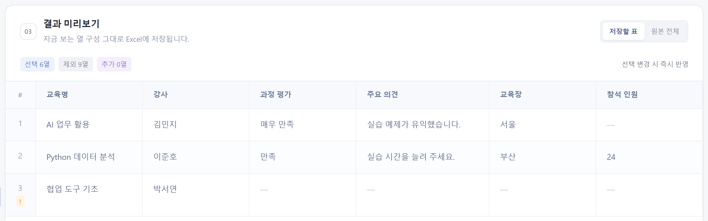
- 결과 미리보기의 ‘저장할 표’가 선택되어 있는지 확인합니다.
- 교육명 다음에 강사가 보이고, 교육일 항목은 없는지 확인합니다.
- 긴 내용은 칸을 누르면 크게 볼 수 있습니다. 빈 값은 화면에서 ‘—’로 보입니다.
샘플로 표 만들기 연습
08새 항목 ‘검토 상태’ 추가
받은 메일에 없던 관리용 항목을 추가할 수 있습니다.
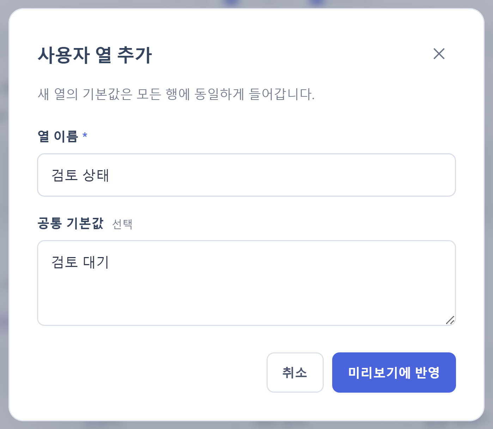
- ‘열 구성’ 아래의 ‘사용자 열 추가’를 누릅니다.
- ‘열 이름’에는 ‘검토 상태’, ‘공통 기본값’에는 ‘검토 대기’를 입력합니다.
- ‘미리보기에 반영’을 누릅니다. 모든 메일 줄에 같은 값이 들어갑니다.
더 알아보기
예를 들어 ‘담당자’, ‘비고’ 같은 항목도 추가할 수 있습니다. 이름은 이미 있는 항목과 겹치지 않게 정합니다. 체크를 해제한 항목의 이름도 중복으로 봅니다.
메일마다 서로 다른 담당자나 검토 결과를 적으려면 일단 빈 항목으로 추가하고, 저장한 Excel에서 각 줄을 수정하세요.
샘플로 표 만들기 연습
09항목 순서와 내용 바꾸기
추가한 항목은 보라색으로 표시합니다.
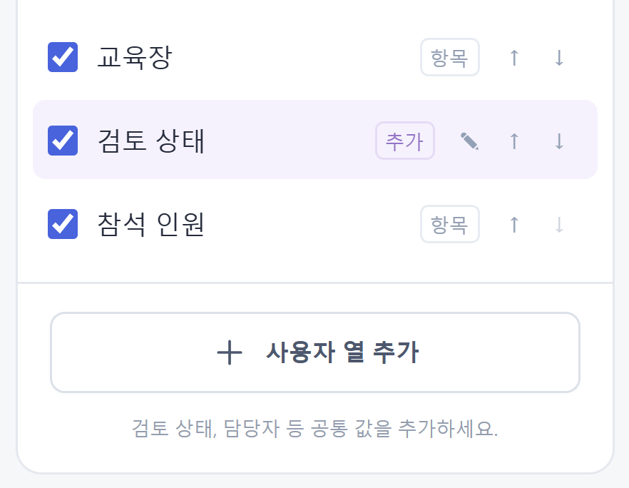
- ‘검토 상태’ 오른쪽의 위쪽 화살표를 한 번 누릅니다.
- ‘참석 인원’ 앞에 검토 상태가 놓였는지 확인합니다.
- 추가한 항목의 이름이나 공통값을 바꾸려면 연필 모양을 누릅니다.
더 알아보기
처음 상태로 되돌리려면 ‘초기화’를 누릅니다. 추가한 항목은 없어지고, 처음 불러온 모든 항목과 순서가 돌아옵니다.
샘플로 표 만들기 연습
10저장할 표 최종 확인
연습을 마치면 메일 3개, 저장할 항목 7개가 됩니다.
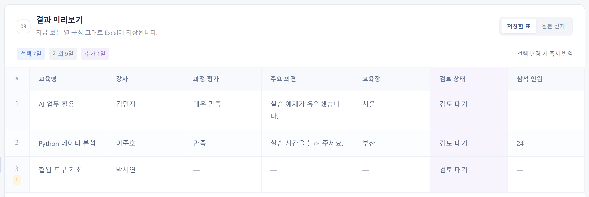
- 교육일이 빠지고, 검토 상태에 ‘검토 대기’가 세 줄 모두 들어갔는지 봅니다.
- ‘원본 전체’를 누르면 편집 전 자료와 비교할 수 있습니다.
- 비교한 뒤 ‘저장할 표’로 돌아와 저장할 항목과 순서를 확인합니다.
더 알아보기
‘선택 7열’은 실제로 저장할 항목 수입니다. ‘제외 9열’은 기본 메일 정보 8개와 교육일을 뺀 수이며, ‘추가 1열’은 검토 상태를 뜻합니다.
화면을 새로고침하거나 다른 메일을 불러오면 열 설정은 처음 상태로 돌아갑니다. 작업이 끝났다면 먼저 결과를 저장하세요.
샘플로 표 만들기 연습
11편집 전 자료와 비교하기
‘원본 전체’는 처음 불러온 항목을 모두 보여 주는 화면입니다.
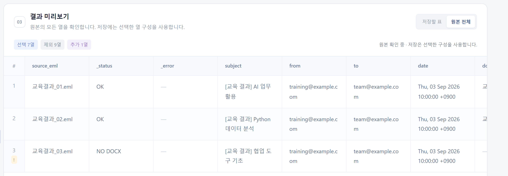
- 결과 미리보기 위의 ‘원본 전체’를 눌러 항목을 빼기 전의 자료를 봅니다.
- 비교한 뒤 ‘저장할 표’로 돌아옵니다. 항목과 순서를 확인하고 저장합니다.
더 알아보기
이 화면에서는 가로로 길게 이어지는 항목을 스크롤해 볼 수 있습니다. 화면을 비교하는 것만으로 저장할 항목 선택이 바뀌지는 않습니다.
결과 저장하기
12저장할 폴더 정하기
화면 아래의 ‘결과 저장 위치’는 파일을 보관할 폴더 주소입니다.
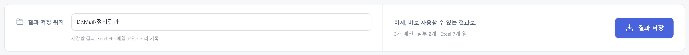
- 처음에는 프로그램이 제안한 저장 위치를 그대로 사용해도 됩니다.
- 다른 곳에 보관하려면 원하는 폴더의 주소를 입력합니다.
- 오른쪽 아래 ‘결과 저장’을 누릅니다.
더 알아보기
‘폴더 선택’이나 ‘EML 파일 선택’, 샘플로 불러왔을 때는 보통 사용자 폴더의 Downloads 안에 있는 EmailTools 폴더를 제안합니다.
메일이 있는 폴더 주소를 직접 입력해 불러왔다면 그 폴더 아래의 _EML_OUTPUT을 제안합니다.
저장 위치를 직접 바꾼 뒤에는 다른 메일을 불러와도 그 위치가 유지될 수 있습니다. 저장하기 전에 한 번 더 확인하세요.
저장 위치를 비우면 내려받기만 제공합니다. 이때는 필요한 파일을 꼭 내려받아 보관한 뒤 프로그램을 종료하세요.
결과 저장하기
13저장된 Excel 열기
저장을 마치면 완료 안내와 다시 받을 수 있는 버튼이 나타납니다.
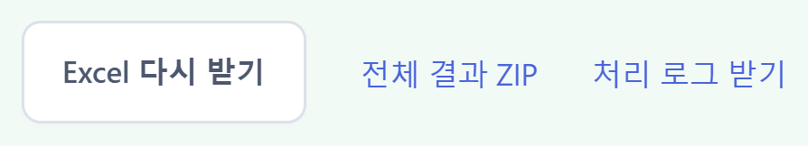
- 내려받은 EML_Table_Result.xlsx를 열고 아래쪽 ‘Result’ 시트를 확인합니다.
- 연습 결과에 3개 줄과 7개 항목이 있는지 확인합니다.
- 다운로드 파일을 찾기 어렵다면 ‘Excel 다시 받기’를 누르거나 안내된 저장 폴더를 엽니다.
더 알아보기
‘전체 결과 ZIP’은 결과 파일들을 하나로 묶은 압축 파일입니다. ‘처리 로그 받기’는 작업 중 있었던 일이나 오류를 적은 기록 파일을 받는 기능입니다.
저장을 다시 누르면 날짜와 시각이 붙은 새 폴더를 만듭니다. 이전 결과는 덮어쓰지 않습니다. 같은 파일을 다시 받고 싶을 때는 다시 받기 버튼을 사용하세요.
내 메일로 실제 작업하기
14내 메일 불러오기
연습이 끝났다면 실제로 작업할 EML 파일을 선택합니다.
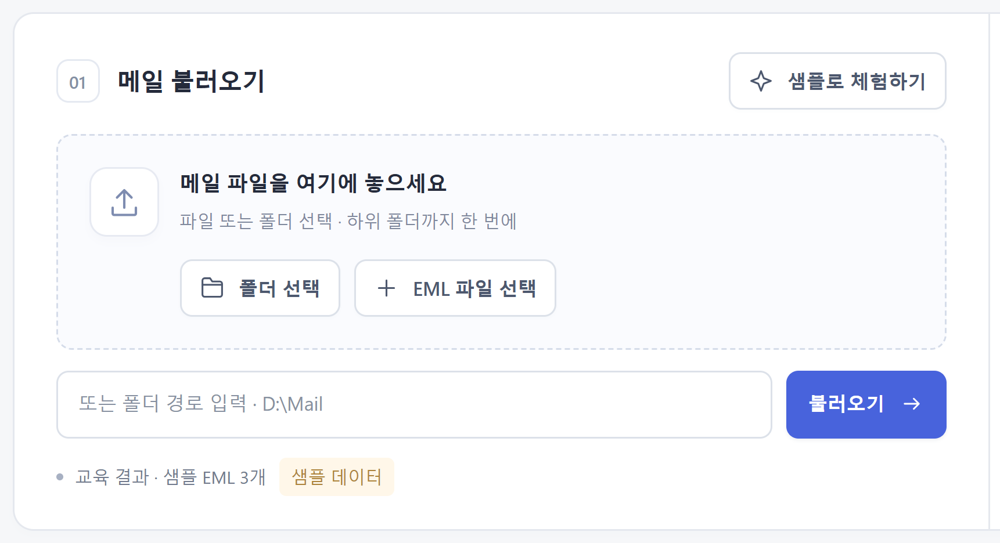
- 할 일을 먼저 고릅니다. 표를 모으려면 ‘표 취합’을 선택합니다.
- 폴더 안의 메일을 모두 읽으려면 ‘폴더 선택’, 일부만 고르려면 ‘EML 파일 선택’을 누릅니다.
- 메일을 다 읽으면 개수를 확인하고, 연습한 방법으로 항목을 고른 뒤 저장합니다.
더 알아보기
폴더를 고르면 그 안의 하위 폴더도 함께 읽습니다. EML 파일을 화면의 메일 불러오기 영역에 끌어 놓아도 됩니다. 폴더는 ‘폴더 선택’ 버튼을 쓰는 편이 간단합니다.
한 번에 파일 5,000개 또는 전체 용량 64 MB를 넘는다는 안내가 나오면, 폴더 주소를 위 입력칸에 붙여 넣고 ‘불러오기’를 누릅니다.
이메일 화면을 찍은 사진이나 Word 파일만으로는 시작할 수 없습니다. 입력 파일은 .eml이어야 합니다.
내 메일로 실제 작업하기
15사용 예시: 교육 결과 모으기
여러 사람이 메일 본문이나 Word 첨부로 보낸 교육 결과를 한 표로 정리합니다.
- 회신받은 메일을 한 폴더에 .eml 파일로 모으고, ‘표 취합’을 선택합니다.
- 메일 본문 표와 Word 첨부 표 중 필요한 곳을 체크하고, 그 메일 폴더를 불러옵니다.
- 교육명과 강사 등 필요한 항목을 남기고 ‘검토 상태’를 추가한 뒤 Excel로 저장합니다.
더 알아보기
예를 들어 원래 표에 ‘교육명 | AI 업무 활용’, ‘강사 | 김민지’처럼 항목과 값이 짝을 이루고 있으면, 결과에서는 교육명과 강사가 각각 하나의 열이 됩니다.
Word 첨부에만 표가 있다면 ‘HTML 본문’을 해제해도 됩니다. 반대로 메일 본문에만 표가 있다면 ‘DOCX 첨부’를 해제합니다.
항목명이 다른 값은 자동으로 같은 항목으로 합치지 않습니다. ‘교육기간’과 ‘교육 기간’처럼 이름이 다르면 따로 보일 수 있습니다. 한 항목에 다른 값이 여러 개 있으면 구분해서 함께 보여 줍니다.
첨부파일 보관하기
16사용 예시: 받은 첨부파일 보관
메일 내용과 첨부 문서를 함께 모아 보관할 때 사용합니다.
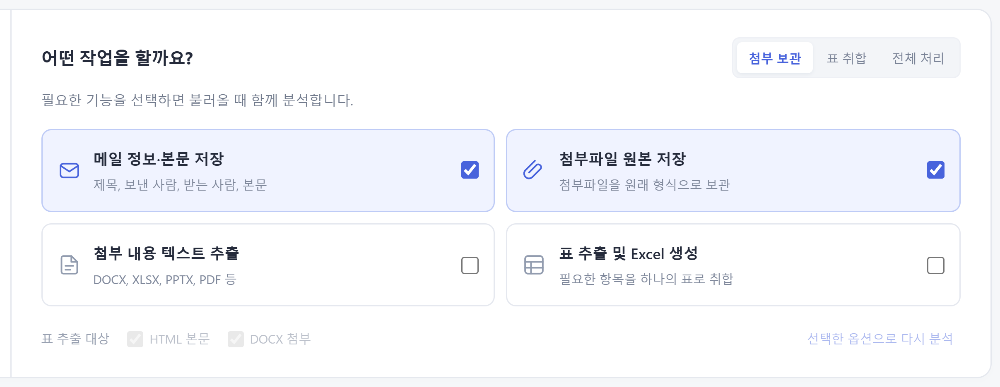
- ‘첨부 보관’을 누릅니다. 메일 내용 저장과 첨부파일 저장이 함께 선택됩니다.
- 메일을 불러온 뒤 ‘메일 요약’과 ‘첨부파일’을 확인합니다.
- ‘결과 저장’을 누르고 내려받은 EmailTools_Result.zip의 압축을 풉니다.
더 알아보기
압축을 푼 결과의 mails 폴더 안에 메일별 폴더가 있습니다. mail.txt는 메일 내용, attachments 폴더는 첨부파일입니다.
같은 이름의 첨부가 있으면 프로그램이 번호를 붙여 구분합니다. 받은 파일이 서로 덮어써지지 않도록 하기 위한 동작입니다.
첨부파일 보관하기
17첨부파일 목록 확인
어느 메일에 어떤 문서가 들어 있는지 확인하는 화면입니다.
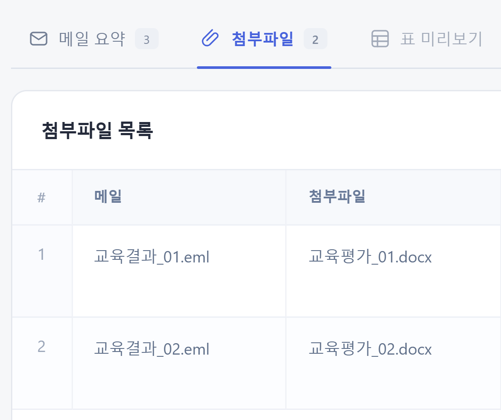
- ‘첨부파일’을 누릅니다.
- ‘메일’과 ‘첨부파일’에서 이름을 확인합니다.
- 목록을 확인했다면 ‘결과 저장’을 눌러 파일을 보관합니다.
더 알아보기
‘not requested’는 문서의 글자를 읽는 기능을 선택하지 않았다는 뜻입니다. 첨부파일 보관만 할 때는 오류가 아닙니다.
‘형식’ 열에 긴 영문이 보여도 파일 종류를 나타내는 정보이므로 직접 입력하거나 수정할 필요가 없습니다.
첨부 문서의 글자 읽기
18사용 예시: 문서 내용을 글자로 모으기
첨부 문서의 글자를 읽어 별도의 텍스트 파일로 보관할 때 사용합니다.
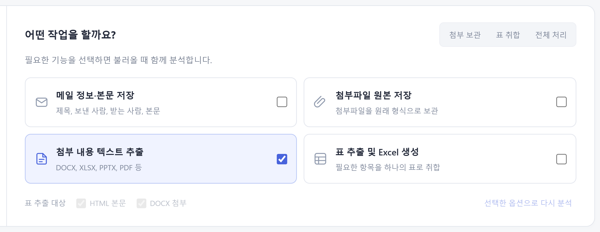
- ‘첨부 내용 텍스트 추출’을 체크하고, 필요 없는 다른 항목은 해제합니다.
- 메일을 불러온 뒤 ‘첨부파일’을 누릅니다.
- ‘추출 내용’의 칸을 눌러 읽어 온 글자를 확인합니다.
더 알아보기
Word, Excel, PowerPoint, PDF와 일반 글자 파일 등을 읽을 수 있습니다. 스캔한 이미지로만 된 PDF의 글자는 읽지 못합니다.
첨부 원본까지 함께 보관하고 싶다면 ‘첨부파일 원본 저장’도 체크하세요.
첨부 문서의 글자 읽기
19읽어 온 내용 확인과 저장
긴 글은 별도 창에서 확인할 수 있습니다.
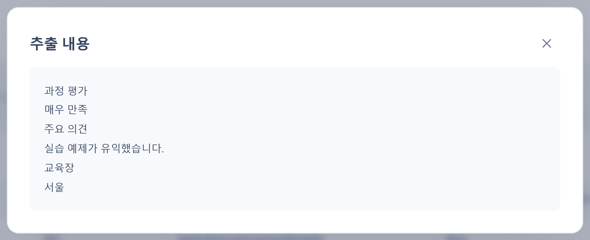
- 문서에서 읽은 내용이 맞는지 확인합니다.
- 오른쪽 위의 X로 내용 창을 닫습니다.
- ‘결과 저장’을 누릅니다. 결과의 mails 안에 있는 메일별 text 폴더에서 글자 파일을 찾습니다.
더 알아보기
글자를 읽지 못해도 첨부 원본 저장을 함께 선택했다면 받은 파일 자체는 보관할 수 있습니다. 암호가 걸리거나 손상된 문서는 읽지 못할 수 있습니다.
여러 작업 함께 하기
20본문과 첨부, 표를 한 번에 저장
메일 내용, 첨부파일, 문서의 글자와 Excel 표가 모두 필요할 때 사용합니다.
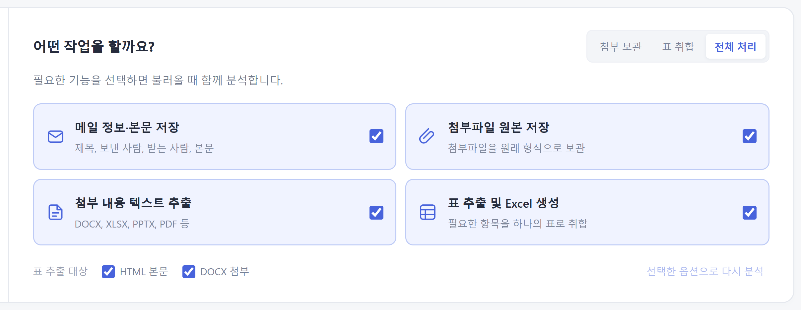
- ‘전체 처리’를 누르고 메일을 불러옵니다.
- 메일 요약, 첨부파일 목록과 표 미리보기를 확인합니다.
- 필요한 열을 고른 뒤 저장합니다. 내려받은 ZIP 안에 선택한 결과가 함께 들어 있습니다.
더 알아보기
결과의 tables 폴더에는 Excel 표, mails 폴더에는 메일별 자료가 있습니다. summary.csv는 메일 처리 요약, attachments.csv는 첨부 목록, processing.log는 처리 기록입니다. 필요한 결과를 찾는 데 사용하세요.
작업 중 선택 바꾸기
21불러온 뒤 할 일을 바꾼 경우
체크만 바꾸면 기존 화면은 이전 결과를 계속 보여 줍니다.
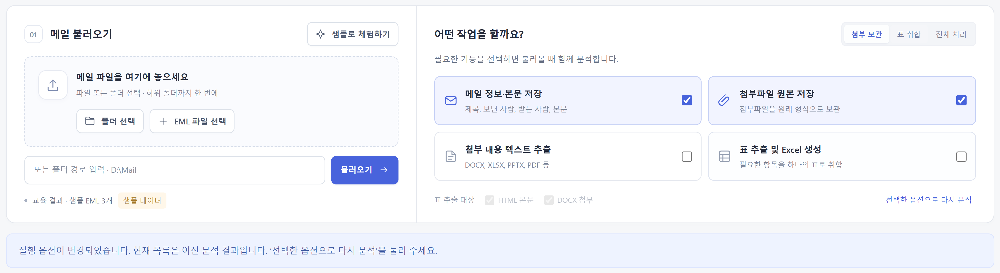
- ‘어떤 작업을 할까요?’에서 새로 할 일을 선택합니다.
- ‘선택한 옵션으로 다시 분석’을 누릅니다. 같은 메일을 새 선택으로 다시 읽습니다.
- 읽기를 마치면 필요한 항목을 다시 고르고 저장합니다.
더 알아보기
다시 분석하기 전까지는 잘못된 결과를 저장하지 않도록 저장 버튼을 사용할 수 없게 합니다.
분석 중에는 ‘분석 중지’를 누를 수 있습니다. 현재 읽는 메일을 마친 뒤 멈출 수 있으므로 잠시 기다려 주세요. 중지한 결과는 저장할 수 없고, 메일을 다시 불러와야 합니다.
막혔을 때 확인하기
22노란 느낌표의 의미
노란 느낌표는 확인할 내용이 있다는 안내입니다.
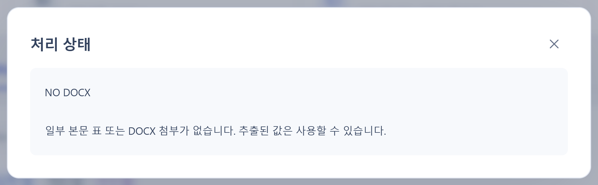
- 표의 줄 번호 아래에 있는 느낌표를 누릅니다.
- ‘NO DOCX’는 Word 첨부가 없다는 뜻입니다. 메일 본문에서 찾은 값은 사용할 수 있습니다.
- 본문 표만 필요했다면 ‘DOCX 첨부’를 해제하고 다시 분석합니다.
더 알아보기
‘NO EMAIL TABLE’은 메일 본문에서 사용할 표를 찾지 못했다는 뜻입니다. ‘NO DOCX TABLE’은 Word 첨부 안에서 표를 찾지 못했다는 뜻입니다.
‘PARSE ERROR’처럼 ERROR가 들어간 안내는 읽는 중 문제가 생겼다는 뜻입니다. ‘메일 요약’의 오류 내용이나 처리 기록을 확인하세요. 다른 메일의 작업은 계속합니다.
막혔을 때 확인하기
23저장이 안 되거나 표가 안 보일 때
화면 위의 안내 문구부터 확인하면 원인을 찾기 쉽습니다.
- 저장 버튼이 흐리면 읽기가 끝났는지, 선택을 바꾼 뒤 다시 분석했는지 확인합니다.
- 표의 항목을 모두 뺐다면 하나 이상 다시 체크합니다.
- 표 미리보기를 누를 수 없다면 ‘표 추출 및 Excel 생성’을 체크하고 다시 분석합니다.
더 알아보기
‘EML 파일이 없습니다’라는 안내가 나오면 고른 폴더에 .eml 파일이 있는지 확인합니다. ZIP 파일은 먼저 압축을 풀고, 폴더를 불러오세요.
저장 중 오류가 나면 저장 위치에 파일을 쓸 수 있는지와 남은 디스크 공간을 확인합니다. 다른 폴더로 바꿔 저장해 볼 수 있습니다.
프로그램에 연결할 수 없다는 안내가 나오면 검은색 실행 창이 닫혔는지 확인합니다. run.bat을 다시 실행한 뒤 새로 열린 작업 화면을 사용하세요.
해결이 어렵다면 선택한 작업, 안내 문구, 문제가 난 파일명과 processing.log를 담당자에게 전달하면 확인하는 데 도움이 됩니다.
알아 두면 좋은 점
24어떤 표를 모을 수 있나요?
메일 본문이나 Word 첨부에 들어 있는 ‘항목과 값’ 형태의 표를 모읍니다.
- 예: ‘교육명 / AI 업무 활용’, ‘강사 / 김민지’처럼 항목 옆에 값이 있는 표를 사용합니다.
- 사진 속 표나 스캔한 표는 읽지 못합니다. PDF·Excel·PowerPoint의 표도 이 표 모으기 기능의 대상은 아닙니다.
- 항목의 값이나 사람마다 다른 검토 결과를 고치려면 저장한 Excel에서 수정합니다.
더 알아보기
Excel·PowerPoint·PDF 문서의 글자를 읽는 기능은 별도로 사용할 수 있습니다. ‘표를 모으기’와 ‘글자를 읽기’는 지원 범위가 다릅니다.
처음 사용한 항목으로 되돌리고 싶다면 ‘초기화’를 누릅니다. 새로 추가한 항목은 함께 없어집니다. 항목 설정을 다음 실행까지 자동으로 기억하는 기능은 현재 없습니다.
작업 마치기
25결과 확인 후 프로그램 종료
필요한 파일을 보관한 뒤 프로그램을 종료합니다.
- 저장한 Excel이나 ZIP을 열어 필요한 자료가 있는지 확인합니다.
- 화면 오른쪽 위 ‘프로그램 종료’를 누르고 종료 확인에 응답합니다.
- 프로그램이 종료되었다는 안내가 나오면 작업 화면을 닫습니다.
더 알아보기
저장 위치를 비워 두고 작업했다면 필요한 파일을 내려받았는지 먼저 확인하세요. 종료할 때 임시 자료는 정리됩니다. 저장한 파일은 남습니다.
설명서를 다시 보려면 프로그램 폴더 안의 docs 폴더에서 user-manual.html 또는 EmailTools_User_Manual.pptx를 엽니다.
기존 사용자를 위한 안내
26이전 도구를 사용하던 분께
이제는 프로그램 폴더의 run.bat 하나로 시작하면 됩니다.
- 첨부파일을 저장하던 작업은 ‘첨부 보관’에서 시작합니다.
- 메일의 표를 Excel로 모으던 작업은 ‘표 취합’에서 시작합니다.
- 파일을 찾을 때는 저장 완료 안내에 나온 폴더를 확인합니다.
더 알아보기
기존 하위 폴더의 실행 파일도 남아 있지만 새 화면을 사용하는 가장 간단한 방법은 프로그램 폴더의 run.bat으로 시작하는 것입니다.
기술적인 명령이나 내부 구조가 필요한 담당자는 프로그램 폴더의 README.md를 참고할 수 있습니다. 일반적인 사용에는 명령어 입력이 필요하지 않습니다.